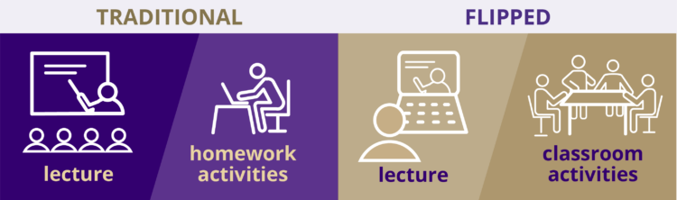
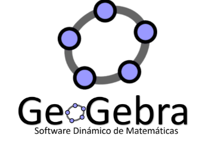
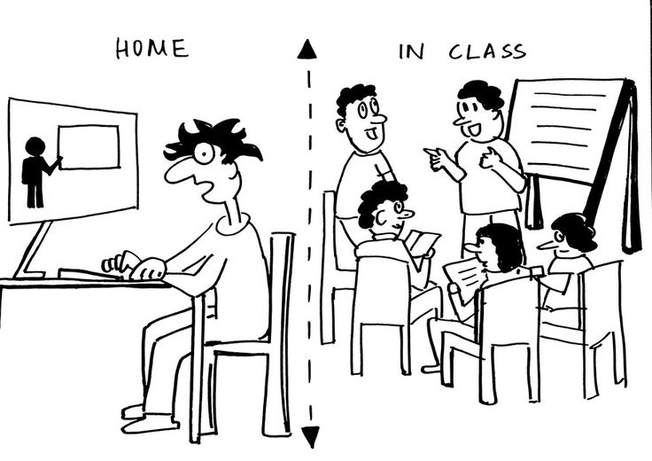

Essential Ideas
- Facilita la adquisición previa de conocimientos teóricos, optimizando el tiempo en clase para la aplicación práctica y la resolución de dudas.
- En lugar de presentar contenido en clase y dejar los ejercicios para casa, el contenido se estudia en casa y se practican actividades en clase.
- Los estudiantes acceden a videos, lecturas o presentaciones antes de la clase para prepararse. Estos pueden presentarse en formato digital.
- Es una metodología perfecta para convinar con otras metodologías en clase, como por ejemplo centros de aprendizaje como se verá en el ejemplo.

Fuente: Education Corner
Medios digitales y sus ventajas


×
Videos
Enviar videos como material de estudio es una gran opción ya que incluso puede utilizarse desde edades muy tempranas. Sin embargo es necesario considerar la edad del estudiante para determinar la duración adecuada del video.
×
Medios Interactivos
Tambien se pueden utilizar páginas web para disponer la información de forma interactiva. Por ejemplo en medios preparados en GeoGebra o Genially. Se puede observar un ejemplo de esto en el plan de lección de la parte de abajo.
×
Lecturas
Las lecturas en formato digital tambien son ideales con formatos de facil distribución como PDF. Sin embargo un punto importante a considerar es que en muchos contextos la lectura no es un formato llamativo para el estudiantado.
Pros and Cons
Pros
- Aumento en la participación y autonomía de los estudiantes.
- Motiva a los estudiantes a desarrollar habilidades de autorregulación y preparación previa.
- Transforma el rol del docente en facilitador del aprendizaje.
- Fomenta una mayor retención del conocimiento al involucrar a los estudiantes en experiencias prácticas.
Cons
- Necesidad de una planificación rigurosa y recursos adecuados.
- algunos estudiantes pueden enfrentar dificultades para completar las tareas previas debido a la falta de acceso a tecnología o a hábitos de estudio autónomos.
- En la actualidad, no todos los estudiantes pueden mantener acceso a tecnologías claves para difundir los medios de esta metodología.

Example Plan
 View Example PDF
View Example PDF